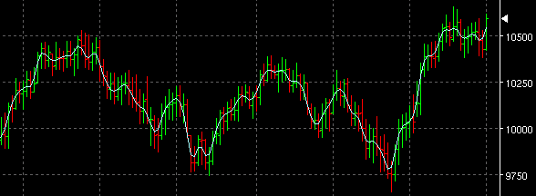

Low Band Pass Filter - LOWPASS
Parameters:
- Color - Plot color
- Line Type - The type of plot to draw
- Label - The text that identifies the plot
- Width - The weighting exponent to alter the bandwidth of the
filter.
- Freq - Adjusts how responsive the filter is to variations in the input signal.
Description:
LOWPASS is a zero lag low bandpass filter similar to the Jurik indicator. It uses a Fast Fourier Transform to translate the input to the frequency domain, applies a low bandpass filter and returns the filtered signal in the real domain. It is useful a general indicator similar to a moving average without the attendant lag. It is extremely useful for smoothing other indicators with a configurable delay.The Lowpass filter comes out of Digital Signal Possessing (DSP) where the intent is to sample a comlex (analog) waveform and filter or decompose it into its various frequency components. The width and freq parameters have real mathematical meanings having to do with determining the Nyquist frequency (i.e. one half of the bandwidth of the input signal) and the cutoff frequency for the filter. All of which are probably not appropriate for this forum. A net search on "DSP", "Nyquist Theorem", "Time Series Analysis", "DSP Filters", etc. will provide a reading list for the next few years. The best book I know on the subject is: Neural, Novel & Hybrid Algorithms for Time Series Prediction by Timothy Masters.
As a practical matter, the standard low bandpass filters like SMA or EMA induce a lag from the input signal while the DSP version minimizes the lag and (in theory) makes for more responsive indicators. I would suggest experimentation. Plot and SMA, compare with Lowpass then play around with the parameters (ignoring the absolute values) to see if you find it useful.
There are two input parameters:
Width (0.0 to 0.5) adjusts the weighting exponent to alter the bandwidth of the filter i.e. the range of points considered by the filter.
Freq (0.001 to 0.2) (in frequency units) adjusts how responsive the filter is to variations in the input signal. Experimentation is suggested to find the best values. (note: if the fractional ranges turn out to be a problem for users, perhaps a range of arbitrary values could be mapped into the acceptable ones.)
The FFT routine used was written by Laurent de Soras and freely available for use (see notes in code).
Formula Reference:
| Syntax |
LOWPASS(ARRAY INPUT, Freq, Width) |
| Function |
ARRAY INPUT can be either an array of bars or a formula variable array of data. |
| Example |
LOWPASS(Close, 0.05, 0.2) |